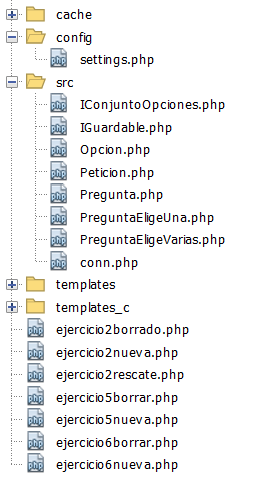
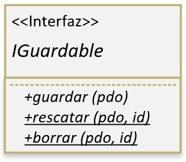
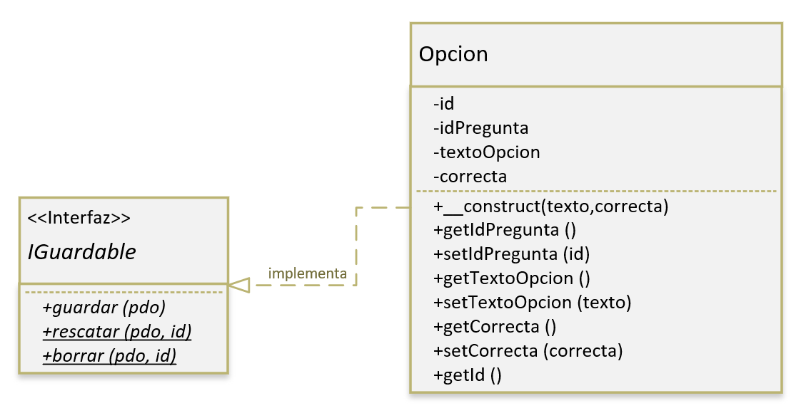

Tarea online
Tarea online
Título de la tarea: Programación orientada a objetos en PHP..
Unidad: 4.
Ciclo formativo y módulo: DAW, Desarrollo Web en Entorno Servidor.
Curso académico: 2020/21
¿Qué contenidos o resultados de aprendizaje trabajaremos?
En esta tarea se trabajarán aspectos tales como:
- Programación orientada a objetos en PHP.
- Uso de plantillas Smarty como aproximación al patrón MVC.
1.- Descripción de la tarea
Caso práctico
María está liada con un pequeño problema que no sabe resolver. Resulta que necesita que los usuarios y las usuarias de una página vayan rellenando datos paso a paso: en primer lugar el usuario debe introducir el nombre y los apellidos, luego, si los datos son correctos, debe introducir su email y su teléfono, y por último, si el email y el teléfono son correctos, deben introducir la compañía en la que trabajan y su cargo.
Según ha visto por Internet, es posible hacerlo usando PHP y diferentes formularios que se van rellenando paso a paso, pero la verdad es que no sabe como. Por lo que decide preguntarle a Ada.
- Perdona que te moleste, ¿puedes darme alguna orientación de ocmo hacer el formulario para el evento de INCMOTIV? - pregunta María.
- Las empresas recibirán un correo y habrá un enlace que llevará a un formulario que deberán rellenar los empleados. Es fácil.
- Si, pero es que quieren que los datos se recogan en tres pasos, primero una parte de los datos, luego otros, y así. La verdad es que es ese el punto donde me atasco, no se como comenzar.
- Es un poco lioso la verdad - comenta Ada-, no me extraña que te resulte complicado. Tienes que usar sesiones. Vas almacenando la información temporalmente en una sesión y así te aseguras de que le estás preguntando los datos que corresponden a cada paso.
En ese momento se le ilumina la cara a María y se da cuenta de que así es más fácil.
El propósito de esta tarea es usar las capacidades de PHP de programación orientada a objetos. Para ello, se propone una tarea en la que hay que desarrollar un cuestionario on-line, donde puede haber preguntas de dos tipos:
- Preguntas con varias opciones con una opción correcta (a elegir una).
- Preguntas con varias opciones con varias opciones correctas (a elegir una o varias).
Para el propósito de este ejercicio, deberás usar dos tablas en una base de datos MySQL en el esquema 'incmotiv' (usado en la tarea 2). Estas tablas están descritas por el siguiente código SQL:
CREATE TABLE `incmotiv`.`pregunta` (
`id` INT NOT NULL AUTO_INCREMENT,
`enunciado` MEDIUMBLOB NOT NULL,
`tipo_pregunta` VARCHAR(15) NOT NULL,
PRIMARY KEY (`id`));
CREATE TABLE `incmotiv`.`opcion` (
`id` INT NOT NULL AUTO_INCREMENT,
`texto_opcion` VARCHAR(45) NOT NULL,
`correcta` TINYINT NOT NULL,
PRIMARY KEY (`id`));
ALTER TABLE `incmotiv`.`opcion`
ADD COLUMN `idpregunta` INT NOT NULL AFTER `correcta`;
ALTER TABLE `incmotiv`.`opcion`
ADD CONSTRAINT `pregunta_asociada`
FOREIGN KEY (`idpregunta`)
REFERENCES `incmotiv`.`pregunta` (`id`)
ON DELETE CASCADE
ON UPDATE CASCADE;Partiendo de esas estructura de datos, crearás clases para dar soporte a los diferentes conceptos y datos existentes:
-
Habrá una clase para modelar el concepto de opción, que será una opción dentro de una pregunta.Distribución de archivos de la tarea
- Habrá una clase abstracta
Preguntapara modelar el concepto genérico de pregunta. - Y habrá dos subclases, que heredarán a
Pregunta, y que modelarán el concepto de pregunta de una sola respuesta, y pregunta donde puede haber varias respuestas correctas.
Para desarrollar el ejercicio de forma más sencilla se proporciona la clase Peticion. El uso de esta clase es opcional. Se trata de una clase que contiene métodos para facilitar el acceso datos recibidos vía GET y POST.
Clase Peticion (zip - 1,68 KB)
Se valorará en todos los casos la corrección ortográfica y gramatical de los mensajes para comunicarnos con el usuario, así como la presentación clara de cualquier información que se muestre al usuario.
1.1.- Ejercicio 1: clase Opcion.
En este apartado crearás una clase llamada Opcion y una interfaz llamada IGuardable que dará soporte a la tabla Opcion de la base de datos.
En primer lugar, en la carpeta src deberás crear la una interfaz llamada IGuardable (archivo dwes04/src/IGuardable.php), que deberán implementar todas las clases que sean guardables y rescatables de la base de datos (en nuestro caso, la clase Opcion y la clase Pregunta).
La interfaz IGuardable interfaz tendrá 3 métodos:
- Método abstracto
guardar. El métodoguardarserá un método que tendrá como único parámetro una conexiónPDOa la base de datos. El objetivo de este método será guardar o modificar el objeto de la base de datos en función de los datos almacenados por la instancia. Como resultado de la ejecución de este método se retornará el número de filas modificadas o creadas en la base de datos. - Método abstracto estático
rescatar. El métodorescatarserá un método que tendrá dos parámetros: una conexiónPDOa la base de datos, y el identificador (id), que corresponde con la clave primaria en la tabla asociada. La función de este método es rescatar el registro con elidindicado, y además, poblar y retornar una instancia con los datos rescatados. Si elidindicado no corresponde con ningún registro, este método retornaránull. - Método abstracto estático
borrar. El método borrar será un método que también tendrá dos parámetros: una conexiónPDOa la base de datos, y el identificador (id), que corresponde con la clave primaria en la tabla asociada. La función de este método es borrar de la base de datos el registro con el id indicado de la tabla correspondiente, y como resultado de la ejecución se retornará el número de filas eliminadas de la base de datos.
Ten en cuenta que los métodos de la interfaz no se implementa en IGuardable, sino en la clase que implementa dicha interfaz. Será en las clases que implementen esta interfaz (Opcion y Pregunta), donde debe escribirse el código de cada método.
En segundo lugar, en la carpeta src deberás crear la clase Opcion (archivo dwes04/src/Opcion.php) que implementará la interfaz IGuardable. Esta clase tendrá los siguientes atributos:
- Atributo privado
id, que está destinado contener elidde la opción (autogenerado por la base de datos). Por defecto, el valor de este atributo esnull, hasta que se guarde por primera vez, que tomará el valor autogenerado por la base de datos. - Atributo privado
idPregunta, que está destinado a almacenar la pregunta asociada a la opción. Por defecto, el valor de este atributo esnull. - Atributo privado
textoOpcion, que está destinado a almacenar el texto de la opción. El texto de la opción no puede ser inferior a 2 carácteres y tampoco debe ser superior al espacio disponible en la tabla de la base de datos para el campotexto_opcion. - Atributo privado
correcta, que está destinado a almacenar si esta es una opción correcta (true) o incorrecta (false). Ten en cuenta que este atributo no puede tener un valor diferente a true o false (no puede ser un número o una cadena).
Además, esta clase deberá contener los siguientes métodos:
- Constructor que admita como parámetros solo el texto de la opción y si la opción es correcta o no.
- Métodos
getIdPreguntaysetIdPreguntaque permiten obtener y establecer el id de la pregunta a la que pertenece esta opción. - Métodos
getTextoOpcionysetTextoOpcionque permiten obtener y establecer el texto de la opción. - Métodos
getCorrectaysetCorrectaque permiten obtener y establecer el valor del atributocorrecta(ten en cuenta que solo puede ser un valor booleano). - Método
getId(no habrásetId) que permite obtener elidde la opción.
Por último, ten en cuenta que los métodos implementados por la interfaz IGuardable, deberán:
- El método
guardardeberá:- Hacer un
INSERTsi es la primera vez que se inserta la opción. Esto puedes saberlo simplemente verificando si elidesnullal hacer la operación de guardardo. Si el guardado se llevó con éxito, deberás obtener el id autogenerado por la base de datos usando el método apropiado de la clasePDO, y almacenar dicho identificador en el atributo id de la clase. - Hacer un
UPDATEsi se trata de una opción rescatada anteriormente.
- Hacer un
- El método
rescatardeberá:- Hacer un
SELECTpara obtener el registro de la base de datos correspondiente y poblar todos los atributos de una nueva instancia deOpcion. Recuerda que este método es estático y que deberá retornar la instancia creada.
- Hacer un
- El método
borrardeberá:- Hacer un
DELETEpara borrar el registro de la base de datos correspondiente.
- Hacer un
1.2.- Ejercicio 2: probando la clase Opcion
En este ejercicio va a someter a pruebas la clase creada en el ejercicio anterior, a través de varios scripts accesibles a través de http://localhost/dwes04/... Para abordar este ejercicio sigue lo siguientes pasos:
1) Crea una pregunta de prueba en la base de datos con la siguiente consulta SQL:
INSERT INTO pregunta (id, enunciado, tipo_pregunta) VALUES (99999, "PRUEBA", "EligeVarias");Fíjate en el ID de pregunta anterior (99999), lo usarás para añadir opciones en la base de datos asociadas a esa pregunta.
2) Ahora, es el momento de añadir la configuración para conectarse a la base de datos y usar Smarty. Para ello, crea el archivo settings.php en la carpeta config (dwes04/config/settings.php) con el siguiente contenido:
<?php
define ('SMARTY_PATH','M:\xampp\htdocs\smarty\libs');
define ('TEMPLATE_DIR',APP_ROOT_DIR.'\templates'); //Directorio de plantillas de Smarty
define ('TEMPLATE_C_DIR',APP_ROOT_DIR.'\templates_c'); //Directorio de plantillas compiladas de Smarty
define ('CONFIG_DIR',APP_ROOT_DIR.'\config'); //Directorio de configuración de Smarty
define ('CACHE_DIR',APP_ROOT_DIR.'\cache'); //Directorio caché de Smarty
set_include_path(SMARTY_PATH);
define ('DB_DSN','mysql:host=localhost;dbname=incmotiv');
define ('DB_USER','dwes04');
define ('DB_PASSWD','dwes04'); Ten en cuenta que algunos de los datos anteriores deberás personalizarlos, como son las constantes SMARTY_PATH, DB_DSN, DB_USER y DB_PASSWD. Este archivo deberás usarlo en este ejercicio y en ejercicios posteriores, pero no debes añadir nada más en él, solo las definiciones y sentencias indicadas.
3) Ahora es el momento de crear una función connect similar a la de la tarea 2 para conectar con la base de datos (recuerda, usa excepciones, es la mejor forma de saber que error ha generado PDO en un momento dado). Ten en cuenta que esta función debe usar las constantes definidas en settings.php.
4) Descarga también Smarty en alguna carpeta de tu ordenador (no tiene porqué ser dentro de htdocs), y haz que la constante SMARTY_PATH del archivo settings.php contenga la ruta hasta la carpeta libs de Smarty (que es donde está la clase principal de este paquete).
Ten en cuenta que en la tarea entregada no deberá incluirse Smarty. Yo sustituiré tu archivo configuración settings.php por el mío propio para que apunte a mi propia instalación de Smarty.
5) Fíjate que en el archivo settings.php en varias ocasiones aparece una constante no definida llamada APP_ROOT_DIR, dicha constante deberás definirla en tu script antes de incluir al archivo settings.php. Esta constante debe contener la carpeta raíz de tu aplicación y debes definirla así: define ('APP_ROOT_DIR', __DIR__, false).
Llegados hasta este punto, y teniendo en cuenta las constantes TEMPLATE_DIR, TEMPLATE_C_DIR, CONFIG_DIR y CACHE_DIR, en los scripts a desarrollar deberás usar Smarty para generar la vista HTML de tu aplicación, por lo que ninguno de tus archivos PHP contendrá HTML a partir de ahora.
¡¡Importante!! Cualquier información mostrada en tu ejercicio deberá generarse con una plantilla de Smarty. Esto implica que no podrás usar "echo" o "print".
6) Una vez realizado todo lo anterior, la prueba de la clase Opcion consistirá en crear varios scripts que permitan añadir una opción a la pregunta anterior (99999), modificarla, borrarla o recuperarla. Ten en cuenta que todos estos scripts compartirán la información de sesión (si en un script se añade información en la sesión, los otros scripts la utilizarán o modificarán). Para ello:
Script de creación de una nueva opción ejercicio2nueva.php (archivo dwes04/ejercicio2nueva.php):
- Crea un script llamado
ejercicio2nueva.phpen la carpetaDWES04donde incluyas todo lo que necesitas (no olvides definir la constanteAPP_ROOT_DIRal principio). - No olvides iniciar el uso de sesiones, pero hazlo siempre después de incluir los archivos que necesitas.
- A través de un formulario, haz que se pregunte por el texto de la opción y si es correcta o no (usa un
checkbox). - Cuando se reciba el texto de la opción y si es correcta o no, deberás guardar dicha opción usando los métodos de la clase
Option. - Usa sesiones para mantener el
idde la opción después de su primer almacenamiento, de forma que al volver al entrar al scriptejercicio2nueva.php, se rescate la opción de la base de datos partiendo delidalmacenado en la sesión. La idea es poder editar dicha opción y volver a guardarla. Nota: debes tener en cuenta que al rescatar la opción de la base de datos, el métodorescatarpuede retornarnull(puede que laOpcionse haya borrado de la base de datos en otro momento). - Piensa que los otros scripts utilizarán también la información de sesión aquí generada.
Script de rescate de una opción ejercicio2rescate.php (archivo dwes04/ejercicio2rescate.php):
- Crea un script llamado
ejercicio2rescate.phpen la carpetaDWES04donde incluyas todo lo que necesitas (no olvides definir la constanteAPP_ROOT_DIRal principio). - No olvides iniciar el uso de sesiones, pero hazlo siempre después de incluir los archivos que necesitas.
- Si en la sesión hay un
IDde opción almacenado (puede provenir de la información de sesión almacenada en los scriptsejercicio2nueva.php), se limitará a mostrar los datos de la opción almacenada en la base de datos. - Si en la sesión no hay un
IDde opción almacenado, se preguntará al usuario por elIDde opción a recuperar de la base de datos. En la operación de recuperación se usarán los métodos de la claseOpcion, y elIDde la opción recuperada se almacenará en la sesión. Si elIDno corresponde con ninguna opción se informará apropiadamente al usuario. Si la recuperación se realizo con éxito, la información de dicha opción se mostrará al usuario. - El
IDde opción almacenado en la sesión afectará tanto aejercicio2nueva.phpcomoejercicio2borrado.php, dado que comparten la información de sesión. - Al mostrar la información de la opción, se mostrará también un botón cuya finalidad es descartar la información de sesión. Si el usuario lo pulsa, se olvidará la información de sesión relativa a la opción (lo cual afecta también a los otros scripts).
Script de borrado de la opción ejercicio2borrado.php (archivo dwes04/ejercicio2borrado.php):
- Crea un script llamado
ejercicio2borrado.phpen la carpetaDWES04donde incluyas todo lo que necesitas (no olvides definir la constanteAPP_ROOT_DIRal principio). - No olvides iniciar el uso de sesiones, pero hazlo siempre después de incluir los archivos que necesitas.
- Si en la sesión hay un
IDde opción almacenado (puede provenir de la información de sesión almacenada en los scriptsejercicio2nueva.phpoejercicio2rescate.php), se preguntará a través de un formulario si se desea borrar la opción con dichoID. Si no hay ningúnIDalmacenado en la sesión, se preguntará por elIDde la opción a borrar. - Obviamente, habrá un botón que permitirá efectuar el borrado de la base de datos de la opción en cuestión. La operación de borrado se realizará usando los métodos de la clase
Opcion. - Es importante que tu script no produzca errores si se recarga la página justo después de realizar la operación de borrado.
- Por último, al realizar el borrado de la opción, no olvides actualizar la información de sesión, para que los otros scripts no se encuentren con información en la sesión desactualizada.
El objetivo de este ejercicio es usar los métodos de la clase Opcion y depurarlos. Si no se usan dichos métodos para resolver el ejercicio, este ejercicio será incorrecto.
En el siguiente vídeo tienes un ejemplo de funcionamiento de los scripts implementados en este ejercicio (no tiene porqué ser exactamente igual):
1.3.- Ejercicio 3: clase Pregunta.
En este ejercicio vamos a dar soporte al concepto de pregunta. Para ello hay que crear una clase Pregunta dentro de la carpeta dwes04/src (archivo dwes04/src/Pregunta.php) con las siguientes características:
- La clase
Preguntaes una clase abstracta (no tendrá instancias). - Tendrá los siguientes atributos:
- Un atributo solo accesible por subclases llamado
id, que corresponde con elidde la pregunta almacenada en la base de datos en la tablapregunta. Por defecto,idtendrá el valornull, para poder saber si la pregunta ha sido almacenada en la base de datos o no. - Un atributo solo accesible por subclases llamado
enunciado.
- Un atributo solo accesible por subclases llamado
- Además tendrá los siguientes métodos:
- Un método constructor cuyo parámetro será el enunciado de la pregunta.
- Un método llamado
getIdque permitirá obtener elidde pregunta después de almacenarla por primera vez o rescatarla de la base de datos. - Un método llamado
getEnunciadoque permitirá obtener el contenido del atributoenunciado. - Un método llamado
setEnunciadocon un único parámetro que permitirá modificar el valor del atributoenunciado. - Un método abstracto llamado
tipoPregunta, que deberán implementar las subclases de esta clase.
Por último, la clase Pregunta implementará la interfaz IGuardable definida en el ejercicio 1. Esta clase deberá implementar dos de los tres métodos de esta interfaz, veamos esto con más detalle:
- No implementará el método
rescatarde la interfazIGuardable. Este método se deberá implementarse específicamente por cada subclase. - Si implementará el método
borrarde la interfazIGuardable. Este método no se implementará en las subclases, dado que las preguntas se borran por id y no se necesita ninguna información adicional de las subclases. Con una implementación común a todas las subclases es suficiente. Además, según la configuración de la base de datos, las opciones de la pregunta se borrarán en cascada al borrar la pregunta. - Si implementará el método
guardarde la interfazIGuardable. El guardado de una pregunta tiene una parte común en todas las preguntas, que es guardar el enunciado y el tipo de pregunta en la base de datos, por lo que es un operación que se puede hacer de forma genérica, pero con algunas precauciones. Esta operación debe almacenar en la tablapreguntados datos:- El
enunciado, que es un atributo de la misma clasePregunta. - Y
tipo_pregunta, que habrás notado que no es un atributo de la clasePregunta. En tal caso, ¿Cómo puedes saber su valor? El valor del campotipo_preguntava determinado por cada tipo de pregunta:EligeUnaoEligeVarias. ¿Cuál se pone? Debes usar el métodotipoPreguntapara obtener este valor. Este método será implementado por las subclases y permitirá saber el tipo de pregunta, de esta forma, no tienes que implementar al 100% el método guardar en cada subclase, lo implementas de forma general en la clase abstracta, y en cada subclase solo implementas parte del proceso.
- El
Los métodos de la clase IGuardable en la clase Pregunta tienen que seguir la misma línea que los de la clase Opcion:
Por último, ten en cuenta que los métodos implementados por la interfaz IGuardable, deberán:
- El método
guardardeberá:- Hacer un
INSERTsi es la primera vez que se inserta la pregunta en la base de datos. Esto puedes saberlo simplemente verificando si elidesnullal hacer la operación de guardardo. Si el guardado se llevó con éxito, deberás obtener el id autogenerado por la base de datos usando el método apropiado de la clasePDO, y almacenar dicho identificador en el atributo id de la clase. - Hacer un
UPDATEsi se trata de una pregunta rescatada anteriormente. - Retornar el número de filas insertadas en la base de datos.
- Hacer un
- El método
borrardeberá:- Hacer un
DELETEpara borrar el registro de la base de datos correspondiente. - Retornar el número de filas eliminadas de la base de datos.
- Hacer un
1.4.- Ejercicio 4: subclase PreguntaEligeUna.
Vamos ahora a modelar el concepto de una pregunta con varias opciones de las que solo se puede elegir una. Para ello, vamos a crear una clase llamada PreguntaEligeUna en la carpeta dwes04/src (archivo dwes04/src/PreguntaEligeUna.php).
En primer lugar, antes de empezar, vas a crear una nueva interfaz. En la carpeta dwes04/src crea una interfaz llamada IConjuntoOpciones. El objetivo de esta interfaz es recoger la necesidad de tener un conjunto de métodos que gestionen la lista de opciones de este modelo de pregunta, por lo que esta interfaz dispondrá de 3 métodos abstractos:
- Método
addOption. Este método tendrá como único parámetro una instancia de la claseOpcion. Su objetivo será añadir opciones a la lista de opciones de la pregunta. - Método
getOpciones. Este método no tendrá parámetros, simplemente retornará el conjunto de opciones de la pregunta (en forma de array con índices numéricos). - Método
delOpcion. Este método tendrá como único parámetro un número, que representará la posición de la opción a eliminar dentro del conjunto de opciones (la posición numérica corresponderá con la posición de la opción en el array retornado por el métodogetOpciones).
Bien, una vez creada la interfaz, procedamos a crear la clase PreguntaEligeUna. Esta clase tiene las siguientes características:
- Esta clase implementa la interfaz
IConjuntoOpcionesy es subclase dePregunta. - Todos sus atributos son privados.
- Tiene un atributo privado llamado
opcionesdestinado a almacenar en un array el conjunto de opciones de la pregunta, pero puedes usar más atributos privados si lo necesitas. - Existe un constructor que hace uso del constructor de la clase padre (
Pregunta) e inicializa los atributos privados. Este constructor tendrá como único parámetro el enunciado de la pregunta, aunque este enunciado es opcional (cuando no se indica debe considerarse una cadena vacía).
Para completar la funcionalidad de esta clase deberás implementar los métodos requeridos por las interfaces implementadas tanto por PreguntaEligeUna como por Pregunta. Estos métodos obligatorios, requeridos por herencia o por las interfaces implementadas son:
- Método
tipoPreguntaheredado de la clasePregunta. - Métodos
addOpcion,getOpcionesydelOpcionrequeridos por la interfazIConjuntoOpciones. - Método estático
rescatar. Este método cargará la pregunta desde la base de datos, y además, sus opciones (recuerda que este método no estaba implementado en la clasePregunta). Para cargar cada opción recuerda que existe el métodorescataren la claseOpcion, el cual deberás usar. Recuerda que este método deberá retornar una instancia dePreguntaEligeUnapoblada con los datos de la base de datos, o bien,nullsi no hay una pregunta en la base de datos con elidindicado.
Adicionalmente, para poder guardar la pregunta de forma adecuada, es necesario que sobrescribas en esta clase el método guardar de forma que:
- Se guarden los datos generales de la
preguntausando el métodoguardarde la clase padre. - Además, deben guardarse las opciones de la pregunta en la base de datos (atributo
opciones), teniendo en cuenta para ello que algunas de las opciones han podido borrarse usando el métododelOpciony que dichas opciones deberán eliminarse de la base de datos. - Recuerda que este método deberá retornar el número de filas modificadas en la base de datos, para ello, solo retornará las realizadas en la tabla
pregunta.
Nota: para la realización de esta clase puedes crear y usar métodos y atributos adicionales, pero dichos métodos y atributos deberán de ser privados.
1.5.- Ejercicio 5: probando la clase PreguntaEligeUna.
Siguiendo el mismo modelo del ejercicio 2, vamos a crear 2 scripts PHP para probar la funcionalidad de la clase PreguntaEligeUna. Estos scripts serán dwes04/ejercicio5nueva.php y dwes04/ejercicio5borrar.php.
¡¡Importante!! Nuevamente, los scripts deberán hacer uso de Smarty para generar el contenido (no debe generarse contenido de otra forma).
En el script ejercicio5nueva.php se proporcionará una interfaz para crear una pregunta tipo PreguntaEligeUna. Para ello:
- Crea un script llamado
ejercicio5nueva.phpen la carpetaDWES04donde incluyas todo lo que necesitas (no olvides definir la constanteAPP_ROOT_DIRal principio, de forma idéntica a como se describe en el ejercicio 2). - No olvides iniciar el uso de sesiones, pero hazlo siempre después de incluir los archivos que necesitas.
- A través de un formulario, haz que se pregunte:
- El enunciado de la pregunta, en un componente tipo
textarea. - Por el texto de 6 opciones (el usuario no tiene porqué rellenarlas todas, solo las que necesite).
- Por la opción correcta (debe hacerse con un selector tipo
radioque permita elegir una de las 6 opciones como correcta). - Un botón para "guardar" la información.
- El enunciado de la pregunta, en un componente tipo
- Cuando el script reciba los datos del formulario, deberá:
- Comprobar si el enunciado está vacío.
- Comprobar que al menos hay texto en 2 de las opciones.
- Comprobar que la opción marcada como correcta no es una opción vacía.
- Si todas las comprobaciones son correctas, deberá almacenar la pregunta y sus opciones en la base de datos usando los métodos de la clase
Pregunta. - Después de almacenar la pregunta en la base de datos, almacenará en la sesión el
IDde la pregunta almacenada.
- Si en la sesión está almacenado el
IDde una pregunta, no deberá mostrarse el formulario, sino el contenido de la pregunta apropiadamente formateado (enunciado, opciones y opción correcta marcada). Recuerda que has implementado el métodorescataren el ejercicio anterior, es el momento de usarlo. En esta situación, aparecerá un botón que permitirá vaciar la información de la sesión para que vuelva a aparecer el formulario. - A la hora de rescatar una pregunta, recuerda que dicho método puede retornar
nullsi la pregunta no existe. - Ten en cuenta que la información de sesión puede ser usada también por los otros scripts.
En el script ejercicio5borrar.php se probarán las operaciones de borrado. Para ello:
- Crea un script llamado
ejercicio5borrar.phpen la carpetaDWES04donde incluyas todo lo que necesitas (no olvides definir la constanteAPP_ROOT_DIRal principio, de forma idéntica a como se describe en el ejercicio 2). - No olvides iniciar el uso de sesiones, pero hazlo siempre después de incluir los archivos que necesitas.
- Si en la sesión hay almacenado el
IDde una pregunta, usarás eseIDpara recuperar los datos de la pregunta. Si no hay unIDde pregunta almacenado en la sesión, se mostrará un formulario que pregunte por dichoID. - Se cargarán los datos de la pregunta en función del
ID(usando los métodos de la clasePregunta) y se mostrará la información de dicha pregunta debidamente formateada (enunciado, opciones y opción correcta marcada). Recuerda nuevamente que el métodorescatarpuede retornarnull. - Se mostrará también un botón con el texto "Borrar opción". Al hacer clic en dicho botón se borrará de la base de datos una opción no correcta al azar de la pregunta, y se mostrarán los datos nuevamente de la pregunta (pudiendo volver a pulsar el botón "Borrar opción"). Sin embargo, si a la pregunta le quedan dos opciones o menos, el botón "Borrar opción" no aparecerá, sino que aparecerá un botón con el texto "Borrar" que al pulsarlo borrará la pregunta de la base de datos.
- Para hacer esta operación deberás usar obligatoriamente los métodos
delOpcion,guardaryborrarde las clasePreguntaEligeUnayPregunta. No deben hacerse consultas "a medida", sino usar los métodos ya implementados de dichas clases. Recuerda que el métododelOpcionno interacciona con la base de datos.
A continuación tienes un vídeo que ilustra el funcionamiento esperado de estos dos scripts (no tiene porqué ser exactamente igual):
1.6.- Ejercicio 6: subclase PreguntaEligeVarias.
Como imaginaras, en este ejercicio se pide que realices y pruebes la clase PreguntaEligeVarias. Esta clase modela a preguntas en las que hay varias opciones y se pueden seleccionar varias de ellas como correctas. Como parte de este ejercicio deberás:
- Crear la clase no heredable
PreguntaEligeVarias(archivodwes04/src/PreguntaEligeVarias.php). Es una clase que realmente varía muy poco con respecto de la clasePreguntaEligeUna, y tienes que seguir unos criterios de creación similares a los de dicha clase. Si lo piensas, gran parte del código de ambas clases es común. Aquí se pide que analices ambas clases y que estudies que cambios habría que añadir. - De igual forma que creaste los archivos
dwes04/ejercicio5nueva.phpydwes04/ejercicio5borrar.php. para la clasePreguntaEligeUna, debes crear los scriptsdwes04/ejercicio6nueva.phpydwes04/ejercicio6borrar.phppara probar la funcionalidad dePreguntaEligeVarias. A la hora de hacer estos scripts, debes tener en cuenta:- En las preguntas tipo
PreguntaEligeVariaspuede haber varias preguntas correctas, por lo que en el scriptdwes04/ejercicio6nueva.phpdeberás usarcheckboxpara que puedan seleccionarse todas las respuestas que sean correctas. - En el script
dwes04/ejercicio6nueva.phpno debe poder crearse una pregunta con todas las opciones correctas o sin ninguna opción correcta, debes tenerlo en cuenta. Tampoco debería poder crearse una pregunta de este tipo que tuviera menos de 2 opciones. - En el script
dwes04/ejercicio6borrar.phpdebe funcionar de forma similar adwes04/ejercicio5borrar.php, pero no debes tener en cuenta la restricción de no borrar una opción correcta.
- En las preguntas tipo
Recuerda usar Smarty para generar la interfaz de usuario.
2.- Información de interés
Recursos necesarios y recomendaciones
Recomendaciones específicas de esta tarea
- Es recomendable que configures el depurador de PHP, te facilitará bastante resolver ciertos problemas.
- Es muchas instalaciones de php los errores está configurados para no mostrarse al usuario. Mientras estas desarrollando una aplicación es imprescindible que los errores de php se muestre, de forma que podamos corregir cualquier aplicación antes de que llegue al usuario final. En el siguiente enlace se explica como:
- Consulta el tutorial de Smarty, es sencillo y verás que se pueden hacer más cosas de las que imaginas: Smarty 3 Manual.
- No debes incorporar Smarty dentro de las carpetas de proyecto.
- No uses autoloading y namespaces salvo que sepas muy bien lo que estás haciendo, son conceptos no abordados en la unidad, muy útiles, pero que de primeras pueden llevarte más tiempo de lo que imaginas.
- No se espera el uso de composer, no es necesario para un proyecto de la escasa envergadura que este tiene.
Recomendaciones generales
- Como ya sabes, para escribir aplicaciones en PHP necesitarás un entorno XAMPP, LAMPP o similar. No te vamos a pedir que instales un entorno u otro, o que trabajes con un sistema operativo concreto, pero si que todos los archivos vayan codificados en UTF-8 y que las rutas a los archivos sean siempre relativas.
- Como plataforma de desarrollo (para escribir código), te aconsejamos NetBeans 12. Es la misma herramienta que se usa en otros módulos y no tendrás que cambiar de herramienta.
- No abordes la tarea hasta que hayas repasado todos los contenidos, y hecho al menos uno de los intentos para el examen en línea, de forma que hayas tenido ocasión de consultar y resolver en los foros cualquier duda que te haya podido surgir.
Indicaciones de entrega
Una vez realizada la tarea, el envío se realizará a través de la plataforma. Comprime la carpeta del proyecto en un fichero .zip y nómbralo siguiendo las siguientes pautas:
Apellido1_Apellido2_Nombre_DWES_Tarea04
3.- Evaluación de la tarea
Criterios de evaluación implicados
- Se han identificado las ventajas de separar la lógica de negocio de los aspectos de presentación de la aplicación.
- Se han analizado tecnologías y mecanismos que permiten realizar esta separación y sus características principales.
- Se han utilizado objetos y controles en el servidor para generar el aspecto visual de la aplicación Web en el cliente.
- Se han utilizado formularios generados de forma dinámica para responder a los eventos de la aplicación Web.
- Se han identificado y aplicado los parámetros relativos a la configuración de la aplicación Web.
- Se han escrito aplicaciones Web con mantenimiento de estado y separación de la lógica de negocio.
- Se han aplicado los principios de la programación orientada a objetos.
- Se ha probado y documentado el código.
¿Cómo valoramos y puntuamos tu tarea?
En esta puedes observar la puntuación máxima asignada a cada ejercicio de la tarea:
|
Rúbrica de la tarea |
|
|---|---|
|
Se ha implementado el ejercicio 1 apropiadamente y funciona correctamente. |
hasta 1,6 puntos |
|
Se ha implementado el ejercicio 2 apropiadamente y funciona correctamente. |
hasta 1,6 puntos |
|
Se ha implementado el ejercicio 3 apropiadamente y funciona correctamente. |
hasta 1,6 puntos |
|
Se ha implementado el ejercicio 4 apropiadamente y funciona correctamente. |
hasta 2 puntos |
|
Se ha implementado el ejercicio 5 apropiadamente y funciona correctamente. |
hasta 1,6 puntos |
|
Se ha implementado el ejercicio 6 apropiadamente y funciona correctamente. |
hasta 1,6 puntos |
A continuación tienes la plantilla que se usará para evaluar la tarea:
Plantilla de corrección de la tarea 4 (2020/2021) (pdf - 65,90 KB)
Anexo. Licencia de recursos
Nota:
Para esta tarea no es necesario incluir en este anexo la cita de las licencias de ningún recurso. Este anexo incluye exclusivamente recursos cuya licencia obliga a la cita expresa y que, por la extensión de sus credenciales o por cualquier cuestión técnica, no se pueden citar en línea. El resto de recursos son de elaboración propia y no requieren cita expresa, quedando su licencia expresada en la de los propios materiales o citada en línea, en el lugar donde aparecen en los contenidos.